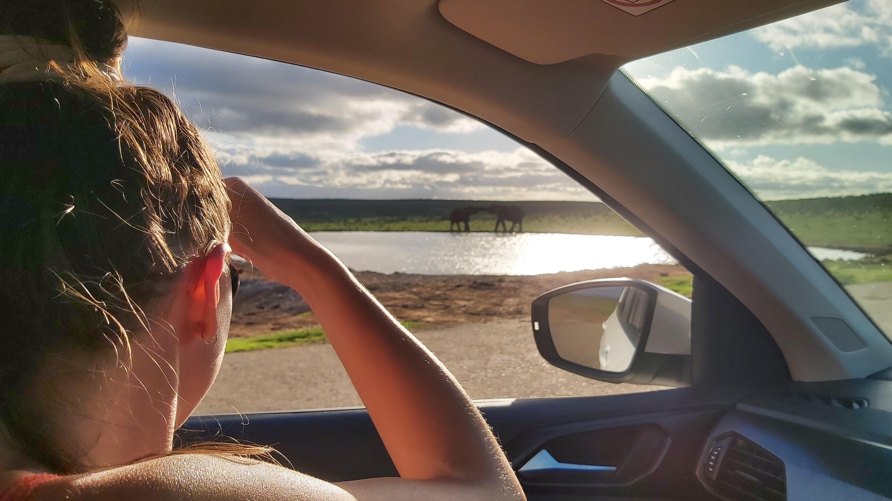

Voici le récit des aventures de mes chères sœurs et moi fin février 2023. Nous sommes partis du Cap pour longer la côte est de l'Afrique du Sud jusqu'à Addo Elephant Park pour ensuite revenir à notre point de départ. Un circuit appelé Garden Route de par les parcs nationaux magnifiques situés tout le long de cet itinéraire.
Dès le premier jour un banc de dauphins est venu nous saluer dans la baie du Cap !

L'activité phare de ce premier jour était l'ascension de Lion's Head, une de mes balades favorites. Quelques passages nécessitent de grimper des échelles et d'escalader la paroi à l'aide de poignées et de chaînes, adrénaline garantie ! Le jeu en vaut la chandelle, le sommet offrant une vue magnifique sur toute la ville et Table Mountain. Il faisait un peu couvert à ce moment là mais nous avons quand même passé un bon moment.
Le lendemain nous avons entamé notre road trip en passant par Betty's Bay. Surprise, la côte grouille de manchots (penguins en anglais) ! Ces derniers coexistent en toute quiétude avec les damans, ces espèces de marmottes que l'on trouve partout au Cap. Sympathique expérience, d'autant plus que tout ce beau monde se promène en toute liberté autour de nous.
Nous finirons la journée dans la petite ville d'Hermanus.
Le jour suivant direction Wilderness avec une petite pause à mi-chemin à Marloth Nature Reserve. Au programme balade dans la forêt avec cascade à l'arrivée.

Par la suite nous avons pu apercevoir moult animaux le long de la route tels que des autruches ou des springboks (cette fameuse antilope qui a donné son nom à l'équipe nationale de rugby). Pour le reste de notre voyage notre hébergement se déroule dans les parcs nationaux. Nous avons adoré dormir ainsi au cœur de la nature et de la faune locale. Le premier matin à Wilderness une biche se trouve à quelques mètres de notre cabine à brouter paisiblement, incroyable ! Dans cette région notre principale activité consista à remonter la rivière en canoë suivi d'une balade dans la forêt menant à une cascade avec piscine naturelle, eh oui, une fois de plus ! Ce fut l'une des meilleures excursion de notre voyage, Half Collared Kingfisher Trail pour ceux que ça intéresse. Sur le sentier du retour nous avons croisé un céphalophe bleu, minuscule antilope qui nous a assez surpris !
Nous passons l'après-midi (ou du moins ce qu'il en reste) à Victoria Bay. C'est une petite plage entourée par la montagne ainsi qu'un spot de surf de renom. Gros coup de cœur en ce qui nous concerne. Il faut savoir que les plages faites pour bronzer au sens européen ne sont pas si nombreuses. La plupart sont immenses, exposées aux éléments et avec d'énormes vagues et beaucoup de courant.
Étape suivante : le Tsitsikamma, mais avant toute chose petite pause à Robberg Nature Reserve. Nous avons fait le tour de cette presqu'île qui nous a permis d'apercevoir bon nombre de dauphins et surtout de phoques. Le sentier passe en hauteur mais il est possible d'entendre et même de sentir ceux-ci tellement ils sont nombreux !
Difficile à bien voir sur la vidéo ci-dessus, mais tous les points noirs, y compris sur les rochers, sont des phoques ! Nous avons aussi croisé un daman.
Notre campement suivant se situait à Storms River Mouth (l'embouchure de la rivière Storms). De nouveau un contexte extraordinaire : forêts, montagne, rivière et océan au même endroit ! Je pense que c'est à ce moment du voyage que nous avons commencé à croiser des babouins. Ces animaux sont visibles au bord (voir sur) la route et même parfois en ville. Bien qu'amusants à première vue, ces singes sont en réalité très impressionnants et des parasites pour la population locale. Pouvant faire la taille d'humains adultes, ils peuvent se montrer très agressifs, d'où les nombreux panneaux interdisant de les nourrir que nous avons croisé.
C'est dans cette région du Tsitsikamma que nous avons effectué une des nos activités préférées : le tubing. Le concept est de descendre dans les rapides sur une petite bouée individuelle jusqu'à atteindre la mer. Le ridicule de l'accoutrement lié à l'adrénaline de certains passages et la bonne humeur et les blagues des guides ont fait que nous avons adoré. Richard and Sheldon, you are the best!
Le lendemain nous avons fait le Canopy Tour qui s'est révélé un peu décevant après les aventures de la veille. Il s'agit d'un parcours en tyroliennes à travers la forêt. Personnellement j'espérais une expérience plus proche de l'accrobranche avec de l'escalade. Ici nous avons simplement glissé d'arbre en arbre, un bon moment malgré tout.
Pour terminer en beauté ce dernier jour au Tsitsikamma nous décidons d'une petite balade à l'embouchure de la Storms River, suivi d'un braai bien mérité.
Enfin dernier jour en direction de l'est à destination du fameux parc Addo. En chemin nous passons par le refuge d'animaux blessés African Wildlife Sanctuary. Nous avons pu y observer de près oiseaux, perroquets, tortues, lamas, autruches, antilopes en tout genre, caracals, guépards et même un crocodile. Beaucoup d'animaux sont aussi en totale liberté tels que des poules, écureuils et des lapins. Puis premier mini safari qui nous a permis d'aller à la rencontre de girafes, zèbres et antilopes dans notre propre voiture. Ce fut à mi-chemin entre un zoo et un parc naturel. Les oiseaux et prédateurs ont leurs propres enclos tandis que l'espace safari permet de rencontrer des animaux plus dociles.
Le soir nous dormons à Addo Elephant Park pour découvrir ce dernier le lendemain. Cette réserve naturelle est absolument immense (plusieurs centaines de milliers d'hectares, de la taille d'un petit pays) et contient de nombreux animaux. Le parc se concentre sur la préservation : faire proliférer la faune et la flore en intervenant aussi peu que possible. Les animaux ne sont pas particulièrement soignés ni séparés des prédateurs, ils vivent autant que possible de la même manière que si les humains n'existaient pas, une approche radicale qui laisse rêveur... Nous avons ici effectué un safari guidé et l'expérience était extraordinaire. Les animaux se sont habitués à ce que voitures et humains ne représentaient aucun danger. Ainsi nous avons eu la chance de croiser des antilopes en tout genre, des mangoustes, phacochères (on se serait cru dans le Roi Lion), zèbres et bien sûr de nombreux éléphants. Ces pachydermes sont particulièrement impressionnants de près et en troupeaux. Nous étions les véritables visiteurs de l'habitat de vie de tous ces animaux et ils daignaient nous tolérer. En deux heures je pense que nous avons fait le tour d'une infime portion de l'ensemble du parc. Ici point d'animaux à endroits précis, il faut partir à leur recherche ! Difficile de retourner dans un zoo après une telle expérience. Même African Wildlife d'où nous venions nous semblait désormais minuscule, une prison. Nous sommes retournés faire un safari dans notre propre voiture le soir pour apercevoir deux éléphants occupés à jouer près d'un point d'eau, magique ! Les animaux d'Addo Elephant Park semblaient particulièrement épanouis, par exemple nous avons croisé de nombreux petits et femelles enceintes ainsi que plusieurs troupeaux entiers.
Le soir au poste d'observation du campement nous avons pu observer deux buffles. Puis dodo au campement de la réserve avant d'attaquer le chemin du retour. Addo, but de notre voyage, en fut également l'apogée !
Au retour direction Nature's Valley, juste à côté de Wilderness. Plage et montagnes magnifiques, encore un dernier petit aperçu du Tsitsikamma. Nous sommes aussi passés à Victoria Bay, notre coup de cœur de l'aller. Au campement de Nature's Valley le moindre écriteau mettait en garde contre les babouins !
Quelques frayeurs pour aller faire pipi au milieu de la nuit, mais au final nous n'en avons croisé que quelques-uns plus loin sur la route. Ouf !
Voici la dernière étape de ce road trip bien rempli : la petite ville de Franschoek. Littéralement «le coin des Français» en afrikaans, c'est ici que se sont installés les huguenots pour venir cultiver la vigne au 17ème siècle. Le vin et les nombreux domaines de la région sont tout particulièrement réputés. C'est assez amusant de se balader dans la région et de tomber sur des noms français désuets ou qui semblent choisis au hasard. Pour notre part nous avons opté pour faire le tour de la région en tram. Une expérience qui s'est révélée fort sympathique. Nous avons pu nous arrêter dans plusieurs domaines, faire la visite des jardins, et bien sûr déguster du vin accompagné de divers plateaux de fromage et de charcuterie. Meilleure nourriture de tout notre voyage et même d'Afrique du Sud à mon avis. Un régal, le tout dans un environnement idyllique, que demander de plus ?
Notre arrêt préféré a été Babylonstoren, un domaine immense avec des jardins somptueux.
Enfin de retour au bercail ! Dernière petite balade pour marquer le coup (avec vue sur Lion's Head dont nous avons atteint le sommet le premier jour).
Ce fut un road trip fabuleux entre frères et sœurs. J'ai omis certains aléas (par exemple une petite indigestion à Wilderness) pour me concentrer sur le positif. Mais globalement nous avons tous passé deux semaines fantastiques. Je suis content de notre choix de dormir à même les parcs nationaux, ce qui nous a permis de soutenir directement ces espaces que nous avons tant apprécié. Ce n'était qu'un petit aperçu des richesses naturelles et culturelles d'Afrique du Sud, j'espère que le récit de ces péripéties donnera l'envie d'en apprendre plus sur ce pays magnifique. À bientôt pour de nouvelles aventures, la bise !
MS, Anna, Vic et Guillaume